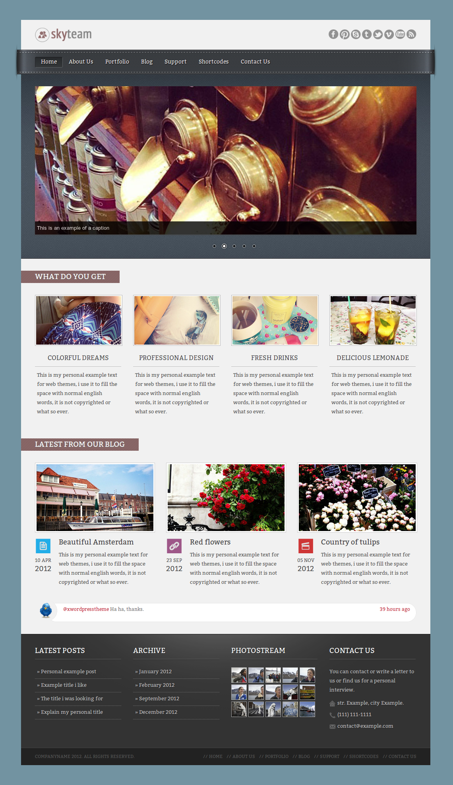
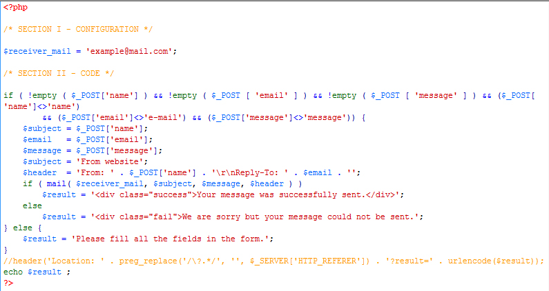
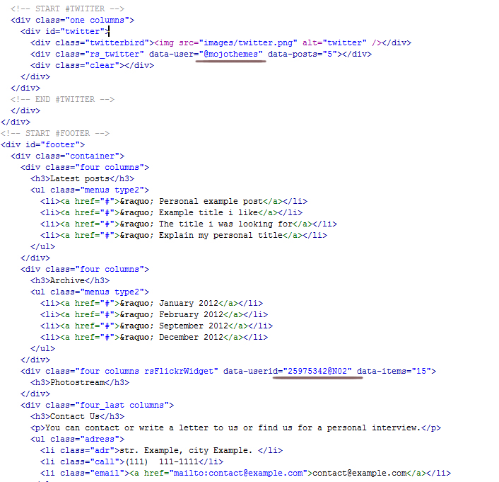
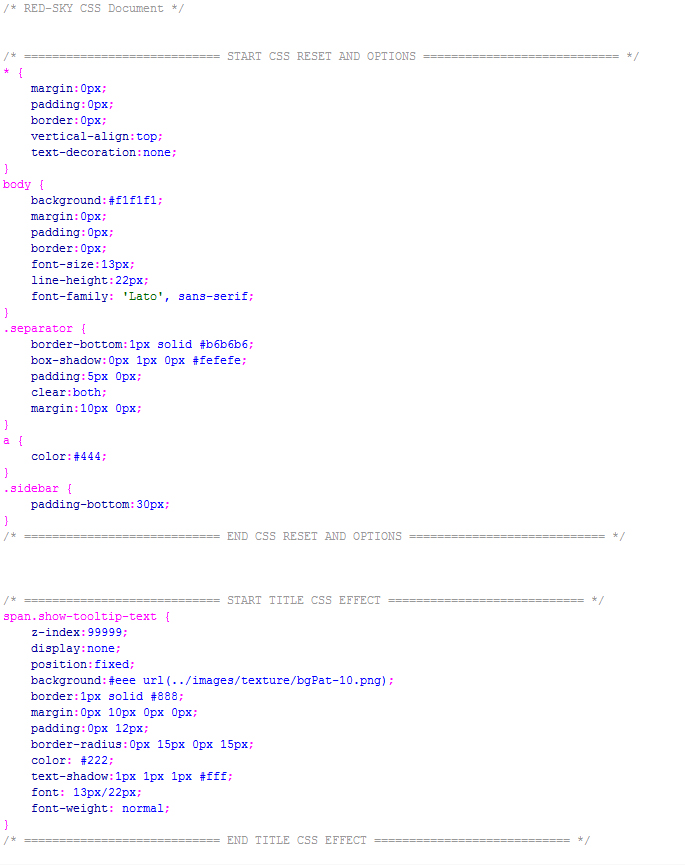
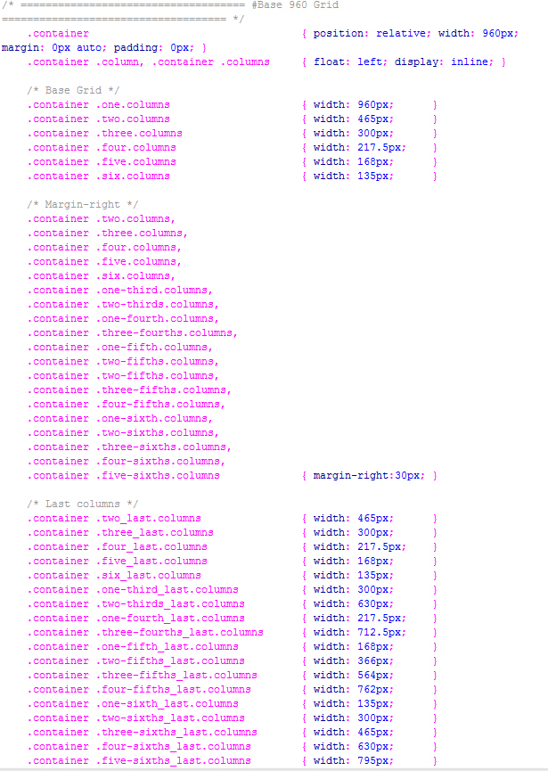

Created: 5 July 2012
By: Red Sky
Email: wp@red-sky.pl
Thank you for purchasing my theme. If you have any questions that are beyond the scope of this help file, please feel free to email via my user page contact form here. Thanks so much!
All pages are fully responsive and 960px wide.

The contact page with a working contact form :)

The contact form to work you have to write youre message and email in php/contact.php file.
To change twitter news just change @mojothemes with your twitter id, the same fot the Flickr photos, change th data-userid: with yours.

The css file is commented about every class, id and page, and it is easy to find the right style what you want to modify.
How the style.css look's like:

The theme is fully responsive, and this is the css:
This theme has Javascripts files.
jQuery is a Javascript library that greatly reduces the amount of code that you must write.
I've used the following images, icons or other files as listed.
Once again, thank you so much for purchasing this theme. As I said at the beginning, I'd be glad to help you if you have any questions relating to this theme. No guarantees, but I'll do my best to assist. If you have a more general question relating to the themes on ThemeForest, you might consider visiting the forums and asking your question in the "Item Discussion" section.